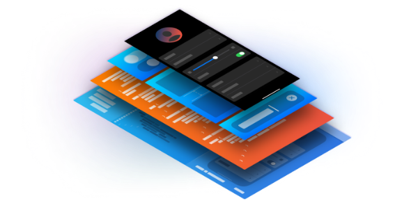

Develop in Swift
Develop in Swift Tutorials are a great first step toward a career in app development using Xcode, Swift, and SwiftUI.
Get startedDevelop apps for Apple platforms
Learn the basics of Xcode, SwiftUI, and UIKit to create compelling apps.
Get started
Introducing SwiftUI
SwiftUI is a modern way to declare user interfaces for any Apple platform. Create beautiful, dynamic apps faster than ever before.
Get startedLearning SwiftUI
Discover tips and techniques for building multiplatform apps with this set of conceptual articles and sample code.
Get startedBring an iPad App to the Mac with Mac Catalyst
Build a native Mac app from the same codebase as your iPad app.
Get startedProfiling apps using Instruments
Use Instruments to analyze the performance, resource usage, and behavior of your apps. Learn how to improve responsiveness, reduce memory usage, and analyze complex behavior over time.
Get startedExploring SwiftUI Sample Apps
Explore these SwiftUI samples using Swift Playgrounds on iPad or in Xcode to learn about defining user interfaces, responding to user interactions, and managing data flow.
Get started